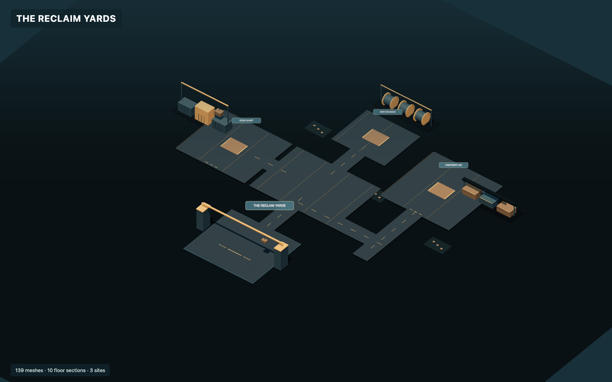
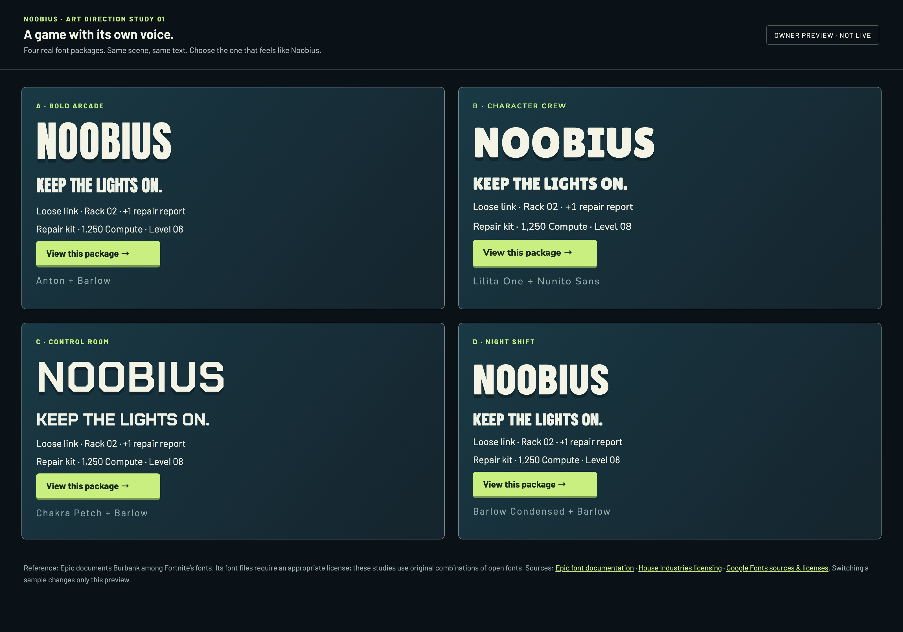
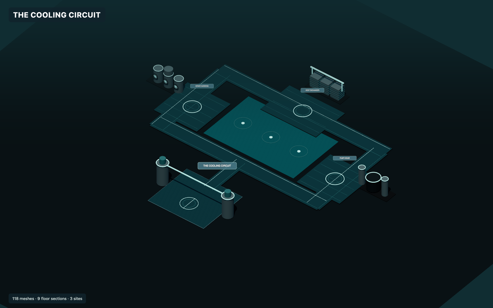
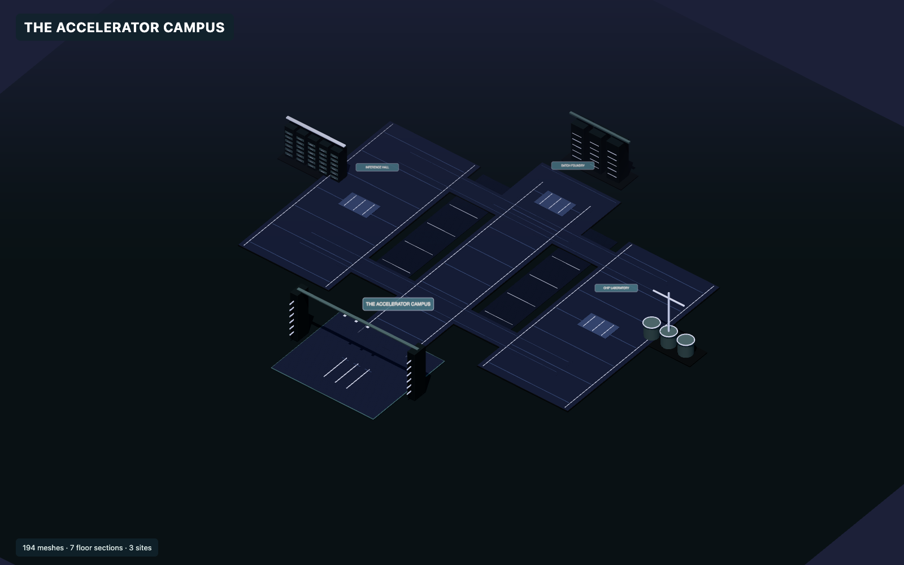
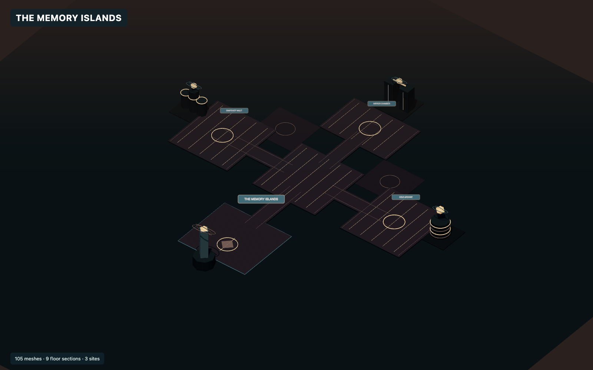
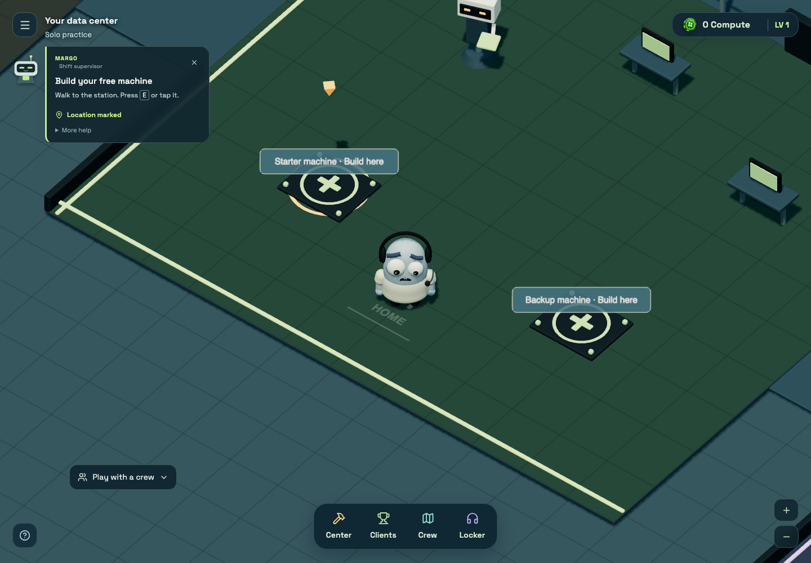
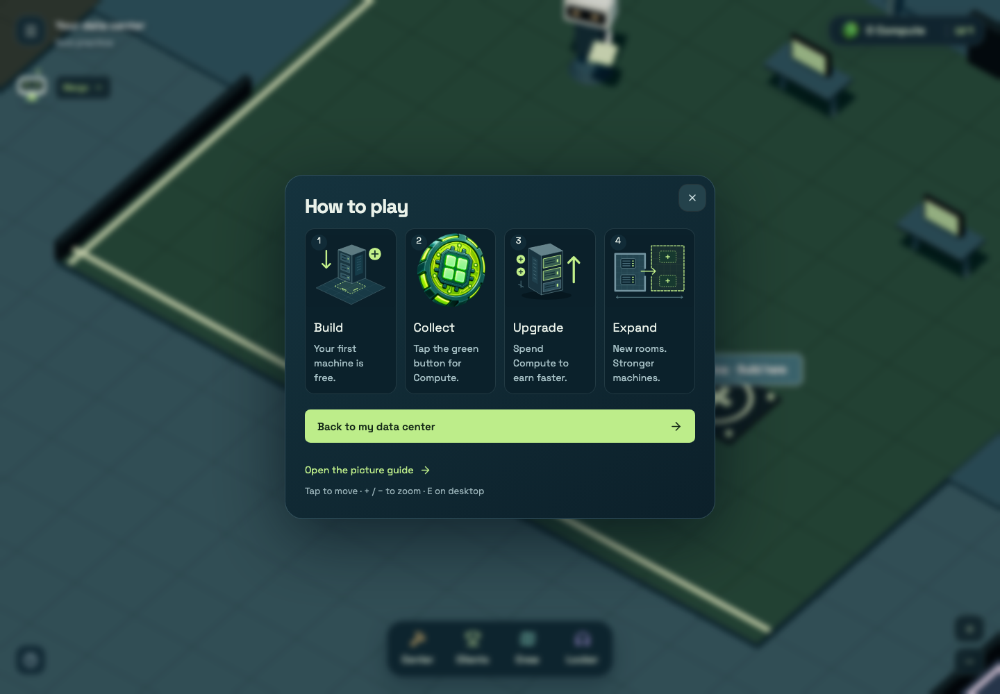
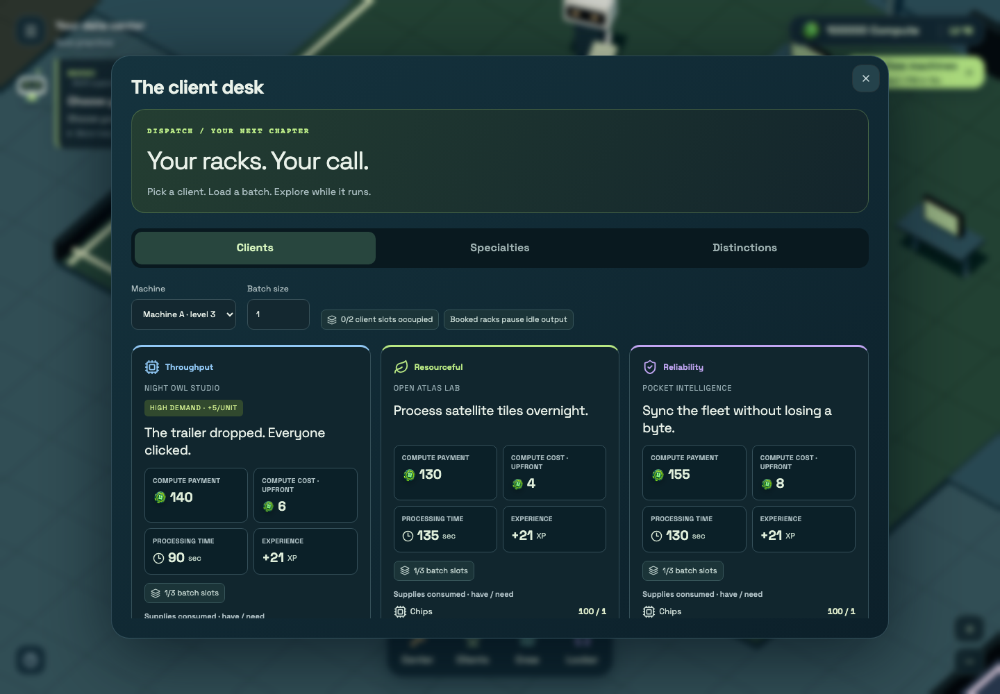

{kind=link}

The Reclaim Yards
Cargo roads, container stacks and loading structures turn Commons into a hardware salvage yard.
A local first pass at clearer play and a stronger identity. These previews have not been deployed. Font choice and the proposed active-play economy remain separate decisions.
Try all four font packages →Explore the realm studies ↓Actual fonts in the same Noobius layout. A brings bold arcade energy; D brings industrial clarity. The game keeps its existing fonts while you choose.

Architecture studies rendered from the revised realm builder. This view isolates the environment; the full game adds the character, worksite interactions and other players.

Cargo roads, container stacks and loading structures turn Commons into a hardware salvage yard.

A reservoir, pump structures and a pipe circuit give the cooling world its own silhouette.

Parallel cable trenches, accelerator racks and a hardware gate emphasize processing capacity.

Archive wells, vault structures and separate islands create a quieter storage frontier.
This pass preserves the existing walkable boundaries and station locations. Larger maps and additional activities are a later gameplay stage. The GPU scene needs a real-phone performance check before release.

Mark a location, then go there yourself. Collapse the bubble whenever you prefer to explore.

Scalable illustrations replace the repeated server cards and blurry repair capture.

Local guest fixtures were used for these captures. Sample balances are for visual review; they are not live player data.
Choose a client → gather or buy supplies → prepare a batch → assign a machine → explore → deliver → reinvest.
Recommended next: machines finish the job you supplied, then stop. Work can finish offline, but simply leaving a tab open does not restart production forever. Keep server validation, recurring resource use and a route forward from zero. More clicking alone does not prevent bots.
Proposal only. Current earnings, balances and payment rules have not changed. The accompanying README explains migration protection and the playtests required before this could ship.
{kind=link}
{kind=link}
{kind=link}
{kind=link}
{kind=link}